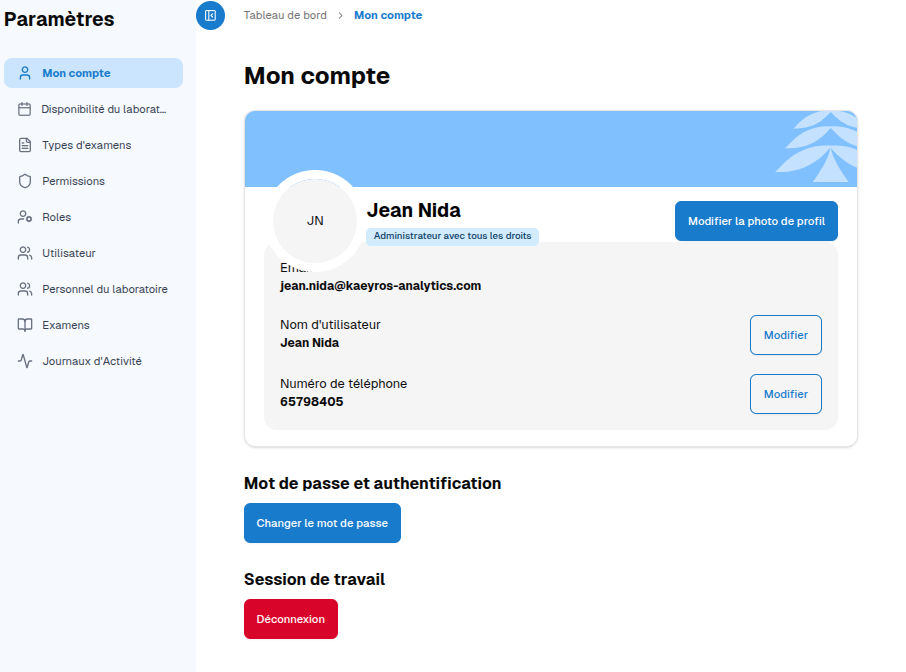
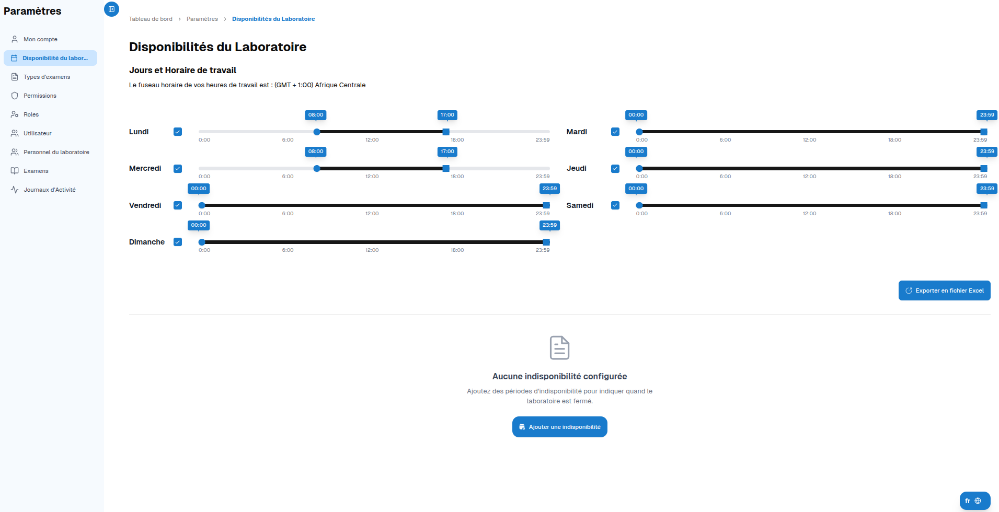
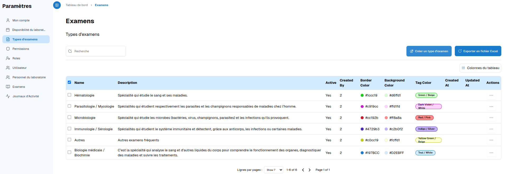
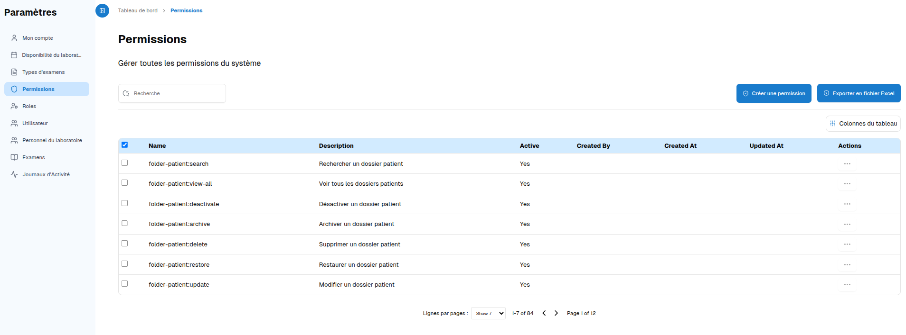
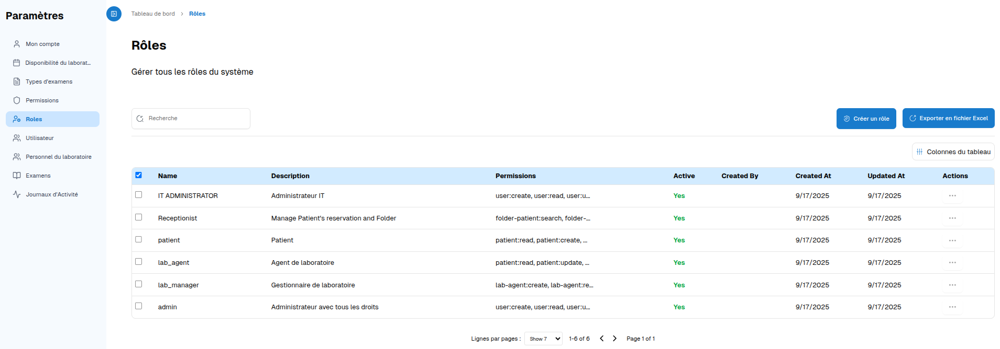
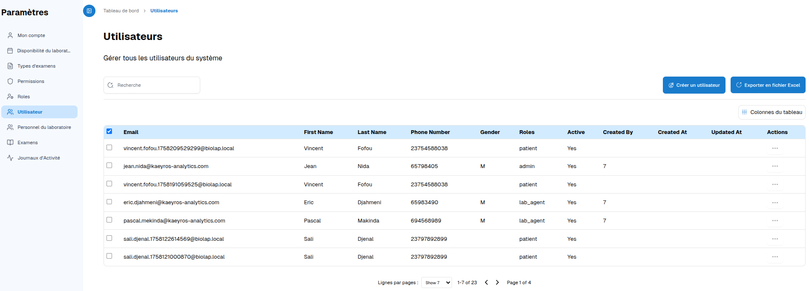
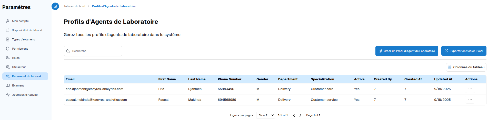
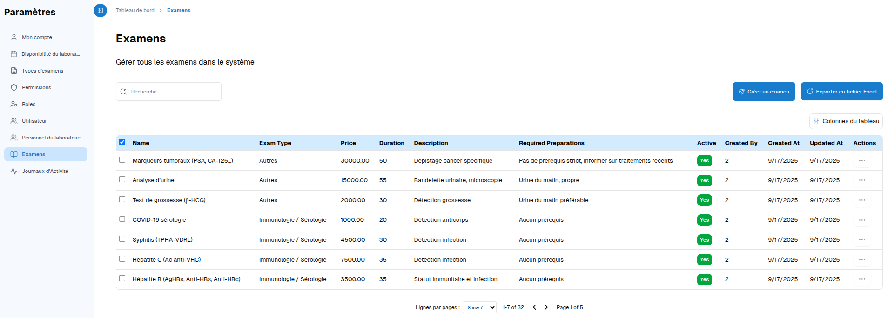

Cette section permet de personnaliser votre profil et de gérer les éléments avancés du système.
Profil utilisateur
Modifier vos informations personnelles : nom, numéro, photo de profil.
Changer votre mot de passe pour plus de sécurité.
Se déconnecter quand vous avez terminé.
Disponibilités du laboratoire
Voir le planning d’ouverture et de fermeture.
Télécharger le planning en fichier Excel.
Ajouter des indisponibilités pour signaler des jours ou heures non disponibles.
Types d’examens
Créer un nouveau type d’examen.

Rechercher et consulter les types existants.
Exporter la liste en Excel.
Permissions du système
Créer de nouvelles permissions pour gérer qui peut accéder à quelles fonctionnalités.
Activer ou désactiver des permissions.
Exporter les permissions en Excel pour suivi ou reporting.
Rôles du système
Créer et gérer des rôles pour organiser les utilisateurs par fonctions.
Exporter la liste des rôles en Excel.
Utilisateurs
Créer un nouvel utilisateur.
Modifier ou supprimer un utilisateur existant.
Exporter la liste des utilisateurs en Excel.
Profils des agents de laboratoire
Créer et gérer les profils des agents pour assigner des rôles et responsabilités.
Examens système
Créer et gérer tous les examens disponibles dans le système pour le laboratoire.